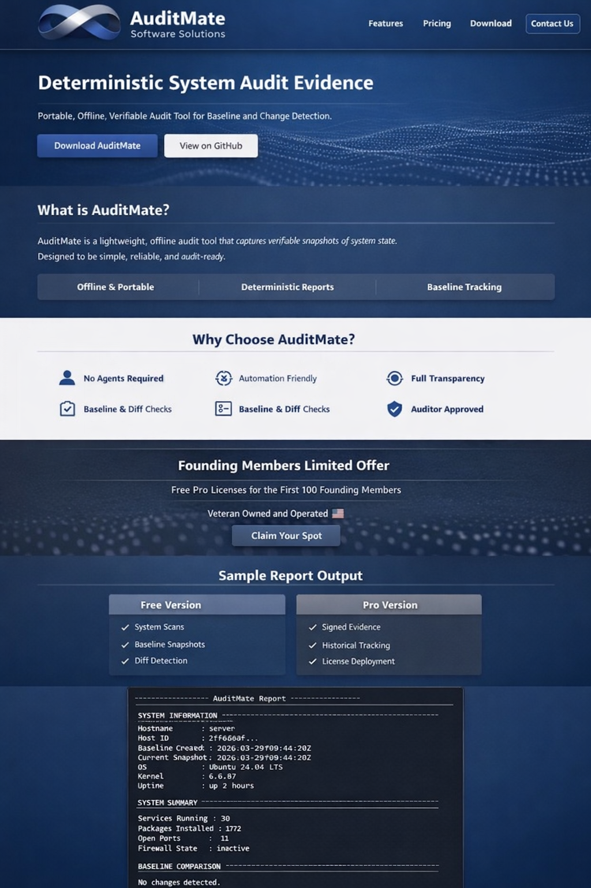

ASS — Secure Your Systems
Portable, Offline, Verifiable Audit Tool for Baseline and Change Detection.
AuditMate is a lightweight, offline audit tool that captures verifiable snapshots of system state.
Free Pro Licenses for the First 100 Founding Members
Veteran Owned and Operated 🇺🇸
Claim Your Spot
============== AuditMate Report ==============
SYSTEM INFORMATION
Hostname : server
Host ID : 2ff660af...
Baseline Created : 2026-03-29T09:44:20Z
Current Snapshot : 2026-03-29T09:44:20Z
OS : Ubuntu 24.04 LTS
Kernel : 6.6.87.2
Uptime : 2 hours
SYSTEM SUMMARY
Services Running : 30
Packages Installed: 1772
Open Ports : 11
Firewall State : inactive
BASELINE COMPARISON
No changes detected.
================================================